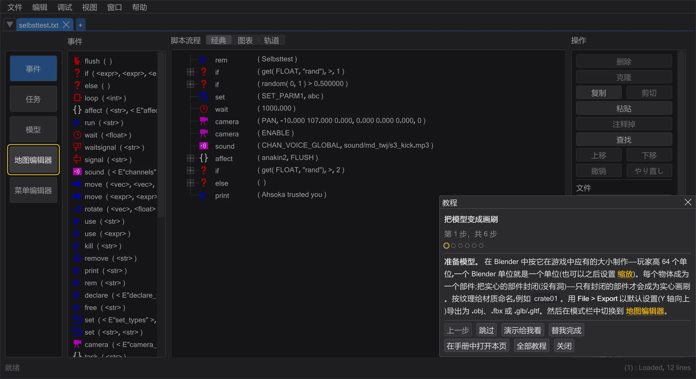
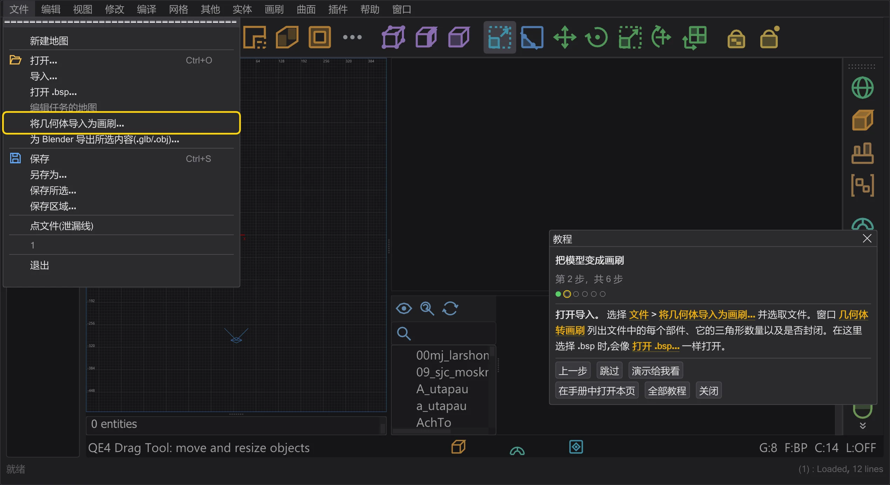
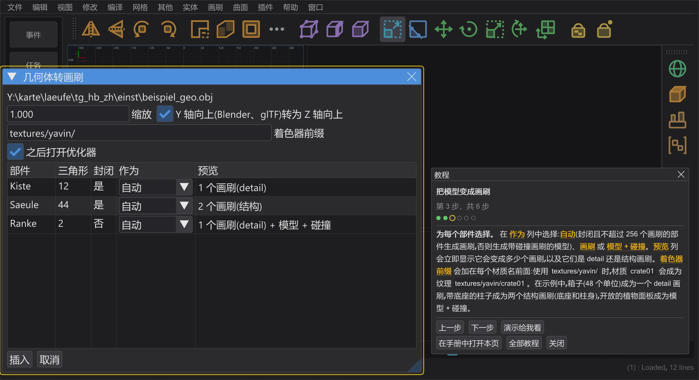
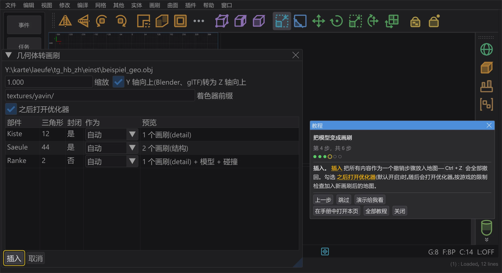
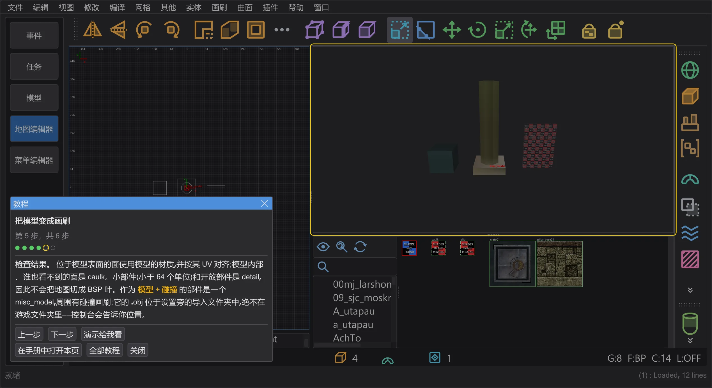
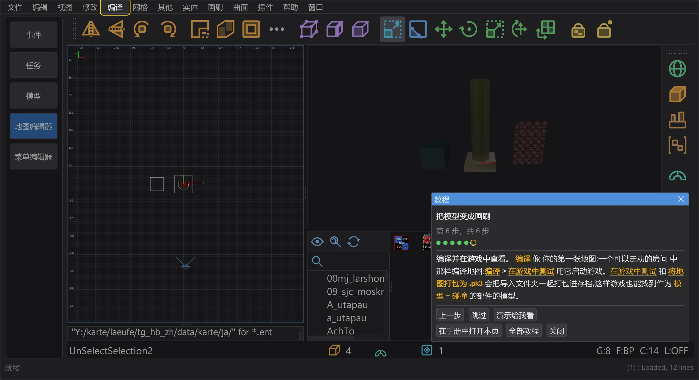

把模型变成画刷
从 Blender 导出模型,在地图编辑器中把它的部件变成画刷或带碰撞画刷的模型,并检查结果。
步骤#
- 1
准备模型。 在 Blender 中按它在游戏中应有的大小制作——玩家高 64 个单位,一个 Blender 单位就是一个单位(也可以之后设置 缩放)。每个物体成为一个部件;把实心的部件封闭(没有洞)——只有封闭的部件才会成为实心画刷。按纹理给材质命名,例如
crate01。用 File > Export 以默认设置(Y 轴向上)导出为 .obj、.fbx 或 .glb/.gltf。然后在模式栏中切换到 地图编辑器。
程序中的第 1 步:教程高亮显示下一步的位置。 - 2
打开导入。 选择 文件 > 将几何体导入为画刷 并选取文件。窗口 几何体转画刷 列出文件中的每个部件、它的三角形数量以及是否封闭。在这里选择 .bsp 时,会像 打开 .bsp 一样打开。

程序中的第 2 步:教程高亮显示下一步的位置。 - 3
为每个部件选择。 在 作为 列中选择:自动(封闭且不超过 256 个画刷的部件生成画刷,否则生成带碰撞画刷的模型)、画刷 或 模型 + 碰撞。预览 列会立即显示它会变成多少个画刷,以及它们是 detail 还是结构画刷。着色器前缀 会加在每个材质名前面:使用
textures/yavin/时,材质crate01会成为纹理textures/yavin/crate01。在示例中,箱子(48 个单位)成为一个 detail 画刷,带底座的柱子成为两个结构画刷(底座和柱身),开放的植物面板成为模型 + 碰撞。
程序中的第 3 步:教程高亮显示下一步的位置。 - 4
插入。 插入 把所有内容作为一个撤销步骤放入地图——Ctrl+Z 会全部撤回。勾选 之后打开优化器(默认开启)时,随后会打开优化器,按游戏的限制检查加入新画刷后的地图。

程序中的第 4 步:教程高亮显示下一步的位置。 - 5
检查结果。 位于模型表面的面使用模型的材质,并按其 UV 对齐;模型内部、谁也看不到的面是 caulk。小部件(小于 64 个单位)和开放部件是 detail,因此不会把地图切成 BSP 叶。作为 模型 + 碰撞 的部件是一个 misc_model,周围有碰撞画刷;它的 .obj 位于设置旁的导入文件夹中,绝不在游戏文件夹里——控制台会告诉你位置。

程序中的第 5 步:教程高亮显示下一步的位置。 - 6
编译并在游戏中查看。 编译 像 你的第一张地图:一个可以走动的房间 中那样编译地图;编译 > 在游戏中测试 用它启动游戏。在游戏中测试 和 将地图打包为 .pk3 会把导入文件夹一起打包进存档,这样游戏也能找到作为 模型 + 碰撞 的部件的模型。

程序中的第 6 步:教程高亮显示下一步的位置。


须知#
- 已编译的地图(.bsp) 用 文件 > 打开 .bsp 打开:能识别的模型会作为 misc_model 恢复,而不是画刷。将未识别的模型面保留为笔刷 会把未识别模型的面作为薄画刷保留在图层 未识别的模型面 中——参见 从几何体恢复 misc_model。
- 游戏模型(.md3、.glm) 不能作为画刷导入——导入只读取 .obj、.fbx、.glb 和 .gltf。请把它们作为 misc_model 放进地图,例如从 ⟦资源浏览器⟧ 中拖入。
- 只要模型、不要画刷:把文件拖到地图编辑器上(把模型拖入地图)。返回 Blender:文件 > 为 Blender 导出所选内容(.glb/.obj)(导出到 Blender 再导回)。